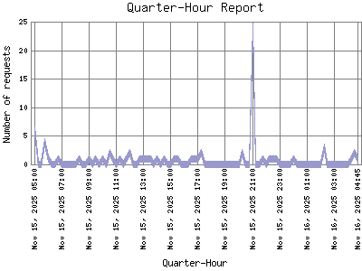

Analog 5.24
Analog 5.24 Report Magic for Analog 2.13
Report Magic for Analog 2.13The Quarter-Hour Report identifies the level of activity for each 15-minute interval within the report timeframe. Remember that one page hit can result in several server requests as the images for each page are loaded.

| Quarter-Hour | Number of requests | Percentage of the requests | |
|---|---|---|---|
| 1. | Nov 16, 2025 04:45 | 1 | 0% |
| 2. | Nov 16, 2025 04:30 | 2 | 0% |
| 3. | Nov 16, 2025 04:15 | 1 | 0% |
| 4. | Nov 16, 2025 04:00 | 0 | 0% |
| 5. | Nov 16, 2025 03:45 | 0 | 0% |
| 6. | Nov 16, 2025 03:30 | 0 | 0% |
| 7. | Nov 16, 2025 03:15 | 0 | 0% |
| 8. | Nov 16, 2025 03:00 | 0 | 0% |
| 9. | Nov 16, 2025 02:45 | 0 | 0% |
| 10. | Nov 16, 2025 02:30 | 0 | 0% |
| 11. | Nov 16, 2025 02:15 | 3 | 0% |
| 12. | Nov 16, 2025 02:00 | 0 | 0% |
| 13. | Nov 16, 2025 01:45 | 0 | 0% |
| 14. | Nov 16, 2025 01:30 | 0 | 0% |
| 15. | Nov 16, 2025 01:15 | 0 | 0% |
| 16. | Nov 16, 2025 01:00 | 0 | 0% |
| 17. | Nov 16, 2025 00:45 | 0 | 0% |
| 18. | Nov 16, 2025 00:30 | 0 | 0% |
| 19. | Nov 16, 2025 00:15 | 0 | 0% |
| 20. | Nov 16, 2025 00:00 | 1 | 0% |
| 21. | Nov 15, 2025 23:45 | 0 | 0% |
| 22. | Nov 15, 2025 23:30 | 0 | 0% |
| 23. | Nov 15, 2025 23:15 | 0 | 0% |
| 24. | Nov 15, 2025 23:00 | 0 | 0% |
| 25. | Nov 15, 2025 22:45 | 1 | 0% |
| 26. | Nov 15, 2025 22:30 | 1 | 0% |
| 27. | Nov 15, 2025 22:15 | 1 | 0% |
| 28. | Nov 15, 2025 22:00 | 0 | 0% |
| 29. | Nov 15, 2025 21:45 | 1 | 0% |
| 30. | Nov 15, 2025 21:30 | 0 | 0% |
| 31. | Nov 15, 2025 21:15 | 0 | 0% |
| 32. | Nov 15, 2025 21:00 | 24 | 0.1% |
| 33. | Nov 15, 2025 20:45 | 0 | 0% |
| 34. | Nov 15, 2025 20:30 | 0 | 0% |
| 35. | Nov 15, 2025 20:15 | 2 | 0% |
| 36. | Nov 15, 2025 20:00 | 0 | 0% |
| 37. | Nov 15, 2025 19:45 | 0 | 0% |
| 38. | Nov 15, 2025 19:30 | 0 | 0% |
| 39. | Nov 15, 2025 19:15 | 0 | 0% |
| 40. | Nov 15, 2025 19:00 | 0 | 0% |
| 41. | Nov 15, 2025 18:45 | 0 | 0% |
| 42. | Nov 15, 2025 18:30 | 0 | 0% |
| 43. | Nov 15, 2025 18:15 | 0 | 0% |
| 44. | Nov 15, 2025 18:00 | 0 | 0% |
| 45. | Nov 15, 2025 17:45 | 0 | 0% |
| 46. | Nov 15, 2025 17:30 | 0 | 0% |
| 47. | Nov 15, 2025 17:15 | 2 | 0% |
| 48. | Nov 15, 2025 17:00 | 1 | 0% |
| 49. | Nov 15, 2025 16:45 | 1 | 0% |
| 50. | Nov 15, 2025 16:30 | 1 | 0% |
| 51. | Nov 15, 2025 16:15 | 0 | 0% |
| 52. | Nov 15, 2025 16:00 | 0 | 0% |
| 53. | Nov 15, 2025 15:45 | 0 | 0% |
| 54. | Nov 15, 2025 15:30 | 1 | 0% |
| 55. | Nov 15, 2025 15:15 | 1 | 0% |
| 56. | Nov 15, 2025 15:00 | 0 | 0% |
| 57. | Nov 15, 2025 14:45 | 0 | 0% |
| 58. | Nov 15, 2025 14:30 | 1 | 0% |
| 59. | Nov 15, 2025 14:15 | 0 | 0% |
| 60. | Nov 15, 2025 14:00 | 1 | 0% |
| 61. | Nov 15, 2025 13:45 | 0 | 0% |
| 62. | Nov 15, 2025 13:30 | 1 | 0% |
| 63. | Nov 15, 2025 13:15 | 1 | 0% |
| 64. | Nov 15, 2025 13:00 | 1 | 0% |
| 65. | Nov 15, 2025 12:45 | 1 | 0% |
| 66. | Nov 15, 2025 12:30 | 0 | 0% |
| 67. | Nov 15, 2025 12:15 | 0 | 0% |
| 68. | Nov 15, 2025 12:00 | 2 | 0% |
| 69. | Nov 15, 2025 11:45 | 1 | 0% |
| 70. | Nov 15, 2025 11:30 | 0 | 0% |
| 71. | Nov 15, 2025 11:15 | 1 | 0% |
| 72. | Nov 15, 2025 11:00 | 0 | 0% |
| 73. | Nov 15, 2025 10:45 | 1 | 0% |
| 74. | Nov 15, 2025 10:30 | 2 | 0% |
| 75. | Nov 15, 2025 10:15 | 0 | 0% |
| 76. | Nov 15, 2025 10:00 | 1 | 0% |
| 77. | Nov 15, 2025 09:45 | 0 | 0% |
| 78. | Nov 15, 2025 09:30 | 1 | 0% |
| 79. | Nov 15, 2025 09:15 | 0 | 0% |
| 80. | Nov 15, 2025 09:00 | 1 | 0% |
| 81. | Nov 15, 2025 08:45 | 0 | 0% |
| 82. | Nov 15, 2025 08:30 | 0 | 0% |
| 83. | Nov 15, 2025 08:15 | 1 | 0% |
| 84. | Nov 15, 2025 08:00 | 0 | 0% |
| 85. | Nov 15, 2025 07:45 | 0 | 0% |
| 86. | Nov 15, 2025 07:30 | 0 | 0% |
| 87. | Nov 15, 2025 07:15 | 0 | 0% |
| 88. | Nov 15, 2025 07:00 | 0 | 0% |
| 89. | Nov 15, 2025 06:45 | 1 | 0% |
| 90. | Nov 15, 2025 06:30 | 0 | 0% |
| 91. | Nov 15, 2025 06:15 | 0 | 0% |
| 92. | Nov 15, 2025 06:00 | 1 | 0% |
| 93. | Nov 15, 2025 05:45 | 4 | 0% |
| 94. | Nov 15, 2025 05:30 | 0 | 0% |
| 95. | Nov 15, 2025 05:15 | 0 | 0% |
| 96. | Nov 15, 2025 05:00 | 6 | 0% |
Most active quarter-hour Mar 23, 2025 13:15 : 1,050 requests handled.
Average quarter-hour: 2 requests handled.
This report was generated on November 17, 2025 01:09.
Report time frame April 8, 2024 11:04 to November 16, 2025 04:46.
| Web statistics report produced by: | |
| Analog 5.24 | Report Magic for Analog 2.13 |